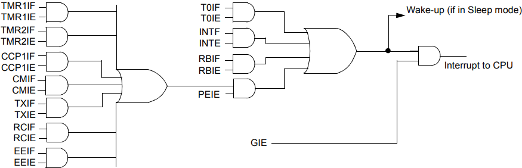

Episódio 14: Conhecendo a interrupção por estouro em Timer0 (registrador TMR0 de 8 bits) de 8 bits no PIC16F628A
Neste episodio veremos o uso do registrador TMR0 e da interrupção associada a ele no qual pode ser usado em rotinas de temporizadores (contadores de tempo) mais precisos quanto também contadores associado ao pino RA4/T0CKI.
O registrador TMR0 SEMPRE é incrementado e cabe ao desenvolvedor do software fazer a escolha por incremento por pulso externo dado no pino RA4/T0CKI ou por um incremento dado por ciclo de instrução.
O registrador TMR0 pode ser zerado (limpo - clear) usando a instrução CLRF TMR0 como também pode ser atualizado para um valor pelas instruções:
- MOVLW 0x0A;
- MOVWF TMR0;
A escolha para a definição de qual será a fonte de incremento é dada por:
-
externa no pino RA4/T0CKI
Código 14.1 - Incremento de transição de alto para baixo sobre o pino RA4/T0CKI BSF OPTION_REG, T0CS ; incremento na transicao de alto para baixo; sobre o pino RA4/T0CKIBSF OPTION_REG, T0SEFonte: Autor 2021 -
ou -
ciclo de instrução interna (CLKOUT)
Código 14.2 - Incremento pelo uso do clock interno do microcontrolador BCF OPTION_REG, T0CSFonte: Autor 2021
Há também uma configuração importante que é a razão (taxa) de incremento do registrador TMR0.
O bit PSA do registrador OPTION_REG é o bit de atribuição do Prescaler (Pré escala) que pode ser atribuido ao TImer0 ou ao Watchdog Timer (que será visto no episodio 25).
Se o Prescaler não for atribuido ao Timer0, usando a instrução BSF OPTION_REG, PSA, o Prescaler será atribuido ao WDT (Watchdog Timer) e a taxa de incremento do registrador TMR0 será de 1:1 [contagem 0x00 até 0xFF(255)].
Se os Prescaler for atribuído ao Timer0 a relação de incremento do registrador TMR0 será baseada na Tabela 14.1.
| Tabela 14.1 - Relação de incremento | ||||||||||||||||||||||||||||||||||||
|---|---|---|---|---|---|---|---|---|---|---|---|---|---|---|---|---|---|---|---|---|---|---|---|---|---|---|---|---|---|---|---|---|---|---|---|---|
|
||||||||||||||||||||||||||||||||||||
| Fonte: Próprio autor (2021) |
Assim, por exemplo, se PS<2:0> = 001 e T0CS = 1, a cada 4 pulsos no pino RA4/T0CKI há o incremento de 1 unidade no registrador TMR0. Agora se PS<2:0> = 110 e T0CS = 1, a cada 120 pulsos no pino RA4/T0CKI há o incremento de 1 unidade no registrador TMR0, assim pode-se contar valor de 0 até 128*255 itens completos.
O acionamento da interrupção associado ao Timer0 se dá pelo estouro (passagem do valor de 0xFF,equivalente a 255, para o valor 0x00) do registrador TMR0 e a ativavação desta interrupção se dá pelos bits GIE e T0IE do registrador INTCON conforme Figura 14.1.
| Figura 14.1 - Disposição dos pinos do teclado |
|---|
|  |
| Fonte: MICROCHIP 2020 (b) pag. 109 |
O bit/flag T0IF do registrador INTCON dá o estado da interrupção, onde se ao ler o estado do bit/flag T0IF for igual a 1, houve um estouro do registrador TMR0, caso T0IF for igual a 0, não houve um estouro no registrador TMR0.
Seja o circuito eletrônico da Figura 14.2 no qual tem a função de contagem de objetos/pessoas ao passar pelo sensor fotoeletronico.
| Figura 14.2 - COLOCAR AQUI O DESENHO DO CIRCUITO |
|---|
|
|
| Fonte: Próprio autor (2021) |
Neste exemplo queremos contar a quantidade de 37 objetos/pessoas ao passar pelo sensor. Ao obter a quantidade desejada o led ligado ao pino RB3 deve ser ligado e reiniciado a contagem. O led permanecerá verde até termos o 1º objeto/pessoa passad(a) pelo sensor novamente.
| Código 14.3 - Implementação do exemplo de aplicação da int. de mudança de estados |
|---|
|
| Fonte: Autor 2021 |
COMENTAR SOBRE USO DE TIMER0 SEM USO DA INTERRUPÇÃO